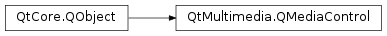

QMediaControl¶
Inherited by: QAudioEncoderSettingsControl, QCameraZoomControl, QAudioInputSelectorControl, QCustomAudioRoleControl, QImageEncoderControl, QAudioOutputSelectorControl, QMediaAudioProbeControl, QMediaAvailabilityControl, QVideoDeviceSelectorControl, QMediaContainerControl, QVideoEncoderSettingsControl, QAudioDecoderControl, QVideoRendererControl, QCameraFeedbackControl, QVideoWindowControl, QCameraImageCaptureControl, QCameraImageProcessingControl, QCameraInfoControl, QMetaDataReaderControl, QCameraLocksControl, QMetaDataWriterControl, QCameraViewfinderSettingsControl, QCameraViewfinderSettingsControl2, QCameraCaptureBufferFormatControl, QRadioDataControl, QCameraCaptureDestinationControl, QCameraControl, QRadioTunerControl, QCameraExposureControl, QAudioRoleControl, QMediaStreamsControl, QMediaVideoProbeControl, QMediaGaplessPlaybackControl, QMediaNetworkAccessControl, QVideoWidgetControl, QMediaPlayerControl, QMediaRecorderControl
Detailed Description¶
The
PySide2.QtMultimedia.QMediaControlclass provides a base interface for media service controls.Media controls provide an interface to individual features provided by a media service. Most services implement a principal control which exposes the core functionality of the service and a number of optional controls which expose any additional functionality.
A pointer to a control implemented by a media service can be obtained using the
QMediaService.requestControl()member ofPySide2.QtMultimedia.QMediaService. If the service doesn’t implement a control it will instead return a null pointer.QMediaPlayerControl *control = qobject_cast<QMediaPlayerControl *>( mediaService->requestControl("org.qt-project.qt.mediaplayercontrol/5.0"));Alternatively if the IId of the control has been declared using
Q_MEDIA_DECLARE_CONTROL()the template version ofQMediaService.requestControl()can be used to request the service without explicitly passing the IId or usingqobject_cast().QMediaPlayerControl *control = mediaService->requestControl<QMediaPlayerControl *>();Most application code will not interface directly with a media service’s controls, instead the
PySide2.QtMultimedia.QMediaObjectwhich owns the service acts as an intermediary between one or more controls and the application.
-
class
PySide2.QtMultimedia.QMediaControl([parent=nullptr])¶ Parameters: parent – PySide2.QtCore.QObjectConstructs a media control with the given
parent.
© 2018 The Qt Company Ltd. Documentation contributions included herein are the copyrights of their respective owners. The documentation provided herein is licensed under the terms of the GNU Free Documentation License version 1.3 as published by the Free Software Foundation. Qt and respective logos are trademarks of The Qt Company Ltd. in Finland and/or other countries worldwide. All other trademarks are property of their respective owners.